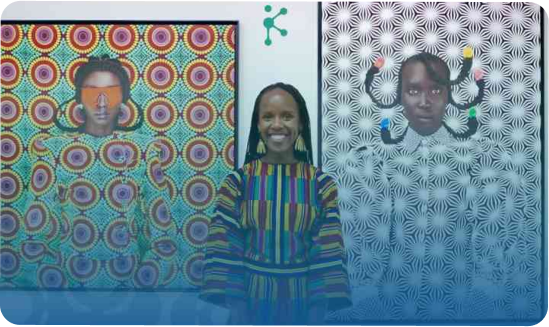

Kisah Thandiwe Muriu: Anak Muda, Kreativitas, dan Perubahan
Fotografi adalah jendela menuju dunia, sebuah bahasa yang menghubungkan kita dengan realitas yang kadang terlalu dalam untuk diungkapkan dengan kata-kata. Di tengah sorotan dunia yang semakin fokus pada visual dan konten kreatif, ada satu fotografer yang telah mampu menangkap hati banyak orang, khususnya anak muda. Namanya adalah Thandiwe Muriu, seorang penyair visual yang telah membangun jembatan antara budaya, kreativitas, dan pesan sosial. Namun, dibalik karya-karyanya yang memukau terdapat kisah inspiratif yang tak kalah menakjubkan.Sekilas, mungkin kita akan terkejut mengetahui bahwa Thandiwe Muriu lahir di Nairobi, sebuah tempat yang menghidupkan keanekaragaman budaya dan keindahan alam yang memukau
Tapi, seperti banyak anak muda di seluruh dunia, Thandiwe Muriu juga dihadapkan pada tantangan dan ekspektasi dalam menjalani hidupnya. Namun, inilah tempat dimana keberanian dan tekad menjadi bintang yang menerangi jalan menuju perubahan. Ia sangat aktif membagikan dan menyuarakan karyanya di media sosial. Mulai dari pameran karya, blog pribadi, sampai beberapa diskusi online, Thandiwe Muriu tidak pernah melewatkan kesempatan untuk berbagi dan menginspirasi anak muda untuk berkarya dengan panggilan masing-masing. Mari kita simak kisah inspiratif di balik sosok Thandiwe Muriu, yang dengan karya-karyanya tidak hanya memotret dunia, tetapi juga mengubah pandangan kita tentang fotografi dan bagaimana anak muda bisa membentuk masa depan. Bagaimana Thandiwe Muriu Menginspirasi Anak Muda? Thandiwe Muriu adalah seorang fotografer kenamaan asal Kenya yang telah mencuri perhatian dunia dengan karya-karya fotografinya yang luar biasa. Ia dikenal karena kemampuannya menggabungkan elemen budaya, seni, dan pesan sosial dalam setiap foto yang diambilnya. Thandiwe Muriu tidak hanya sekadar mengabadikan gambar, tetapi juga menyampaikan narasi yang mendalam melalui tiap jepretan. Penelitian oleh Todd Thrash dan Andrew Elliot pada tahun 2004 menunjukkan betapa pentingnya inspirasi dalam merangsang dan mengembangkan kreativitas individu. Dalam penelitian ini, mereka menyoroti peran inspirasi sebagai pendorong utama ide-ide kreatif dan inovatif yang muncul dalam karya seni dan konten visual. Ini menekankan bahwa inspirasi dapat memotivasi anak muda untuk mengembangkan gagasan kreatif mereka sendiri dan mengaplikasikannya dalam berbagai bentuk seni. Thandiwe Muriu telah menjadi sumber inspirasi yang luar biasa bagi anak muda di seluruh dunia. Dalam karyanya, ia sering mengangkat isu-isu sosial dan budaya yang penting, seperti hak perempuan, kesetaraan, identitas, dan perubahan sosial. Dalam hal ini, Thandiwe Muriu memiliki cara menarik dalam menginspirasi anak muda. Pertama, mendorong kreativitas adalah salah satu pendekatan yang diambil oleh Thandiwe Muriu untuk memotivasi anak muda. Ia membimbing mereka dalam mengeksplorasi kreativitas melalui medium fotografi. Thandiwe Muriu meyakini bahwa fotografi bukan sekadar seni visual, melainkan juga alat yang kuat untuk menyuarakan gagasan dan menyampaikan pesan yang kuat. Ia memberdayakan anak muda untuk mengembangkan ekspresi pribadi mereka melalui seni visual ini. Kedua, Thandiwe Muriu memiliki bakat istimewa dalam menceritakan kisah melalui fotografi. Ia mampu merangkul potensi besar yang terkandung dalam setiap gambar yang diabadikan. Dalam prosesnya, Thandiwe Muriu mengajarkan kepada anak muda bahwa di balik setiap gambar terdapat cerita yang mendalam. Kemampuan untuk mengungkapkan cerita tersebut melalui medium fotografi adalah keterampilan berharga yang dapat diterapkan dalam berbagai bidang. Dengan cara ini, Thandiwe Muriu mengilhami anak muda untuk merangkul seni visual dan kreativitas dalam cara yang bermakna. Ketiga, Thandiwe Muriu juga menginspirasi anak muda untuk aktif dalam menyuarakan isu-isu sosial yang mereka pedulikan. Ia menunjukkan bahwa fotografi dapat digunakan sebagai alat untuk mempromosikan kesadaran sosial, mengajak perubahan, dan membantu memecahkan masalah di masyarakat. Dalam melibatkan anak muda dalam isu-isu sosial, Thandiwe Muriu membangkitkan semangat generasi muda untuk menjadi agen perubahan yang aktif dalam menciptakan perubahan positif dalam masyarakat. Penelitian oleh Pamela J. Shoemaker dan Stephen D. Reese tentang media dan perubahan sosial menunjukkan bahwa media, termasuk fotografi, memiliki pengaruh besar dalam membentuk kesadaran sosial dan memotivasi perubahan di masyarakat. Hasil penelitian ini menekankan bahwa media, seperti fotografi, dapat menjadi alat yang kuat untuk mempengaruhi pandangan dan tindakan sosial, serta menggerakkan perubahan yang positif dalam masyarakat. Thandiwe Muriu, dengan karyanya yang mempertanyakan norma-norma sosial dan mengangkat isu-isu penting, mungkin memotivasi anak muda untuk ikut serta dalam menyuarakan isu-isu sosial yang mereka pedulikan. Jurnalisme Berkebangsaan - Mendorong Kreativitas Anak Muda Thandiwe Muriu tidak hanya memberikan inspirasi kepada anak muda melalui fotografi, tetapi juga berkontribusi dalam mempromosikan sebuah komunitas yang memberdayakan anak muda agar bisa berkarya lewat tulisan dan visual. Nyatanya ada banyak sekali program yang dapat memfasilitasi anak muda untuk bisa memulai langkahnya seperti Thandiwe Muriu, salah-satunya adalah Jurnalisme Berkebangsaan. Program Jurnalisme Berkebangsaan adalah program yang dijalankan Kognisi.id dengan tujuan untuk memperkuat nilai jurnalisme dan kebangsaan melalui dunia digital. Jurnalisme Berkebangsaan juga sering menggagas beberapa program untuk memfasilitasi anak muda untuk terus berkarya, seperti Tiba Bersua. Tiba Bersua menjadi salah-satu program yang mengangkat semangat jurnalistik di kalangan anak muda, mendorong mereka untuk melihat potensi yang ada dalam diri mereka. Program ini diharapkan dapat menjadi motivasi bagi mereka untuk menjadi agen perubahan untuk menciptakan suatu harmoni dalam masyarakat sekitar. Aksi nyata dalam kegiatan Tiba Bersua dikemas menjadi suatu hal yang tidak membosankan bagi anak muda, sehingga mereka bisa mendapat first impression yang mengesankan dan terus melanjutkan karyanya. Pada kesempatan ini, anak muda bisa tetap berkarya melalui suatu kegiatan 'jalan-jalan' yang menyenangkan bagi mereka. Program ini diharapkan bisa menjadi wadah anak muda untuk menyampaikan cerita mereka. Pada akhirnya, cerita yang biasanya bertebaran di dunia maya bisa dikemas menjadi bacaan yang bisa dinikmati oleh masyarakat luas. Sebuah ajakan untuk membawa perubahan, "Kreativitas adalah alat terkuat yang dimiliki manusia. Ketika kita merangkulnya, kita dapat mengubah dunia." - Thandiwe Muriu Thandiwe Muriu telah membuktikan bahwa setiap anak muda memiliki potensi luar biasa untuk menjadi agen perubahan. Melalui seni fotografi, dia telah memperlihatkan kepada kita bahwa kreativitas adalah kekuatan yang bisa menginspirasi dan mengubah dunia. Namun, pesan inspiratif yang dia bawa tidak berhenti di situ. Cerita Thandiwe Muriu menjadi langkah awal kita untuk terus bisa berkreasi dan berdampak bagi masyarakat sekitar kita. Program-program seperti Jurnalisme Berkebangsaan dan Tiba Bersua, mendorong semangat jurnalistik di kalangan kita sebagai anak muda. Kita diajak untuk mengeksplorasi potensi kita dan berani menjadi agen perubahan yang membawa dampak positif pada masyarakat. Sekarang adalah saat yang tepat bagi setiap anak muda untuk mengejar impian, mengaktifkan kreativitas, dan bersama-sama menciptakan perubahan yang lebih baik. Pesan perubahan yang diteruskan oleh Thandiwe Muriu adalah undangan penuh inspirasi kepada kita semua - mari bersama-sama membentuk masa depan yang lebih cerah melalui karya-karya kreatif kita dan dukungan terhadap komunitas yang mencoba untuk memantiknya. Sama seperti Thandiwe Muriu, kita juga memiliki potensi untuk menjadi pelopor perubahan yang menginspirasi dunia.